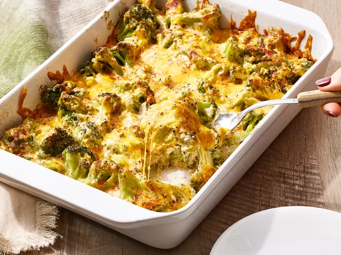

Awesome Broccoli-Cheese Casserole
If you have children or have some coming to visit you as guests this Thanksgiving, I guarantee that they will eat (and enjoy) this veggie dish. It's also fabulous with a Christmas ham.

Ingredients:
- Canned soup: This classic broccoli casserole starts with a can of condensed cream of mushroom soup.
- Mayonnaise: A cup of mayo adds richness and subtle tangy flavor.
- Egg: An egg lends moisture and helps hold the ingredients together.
- Vegetables: You'll need a chopped onion and, of course, frozen broccoli.
- Cheese: For the most delicious results, grate your own Cheddar cheese.
- Seasonings: The broccoli casserole is seasoned with salt, pepper, and paprika.
Brief Overiview of Steps
- Mix the soup, mayo, and egg together.
- Add the frozen broccoli and cheese.
- Transfer the mixture to a prepared baking dish.
- Bake in the preheated oven.